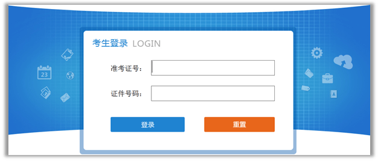
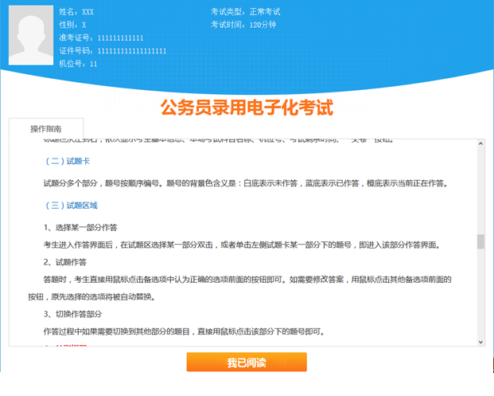
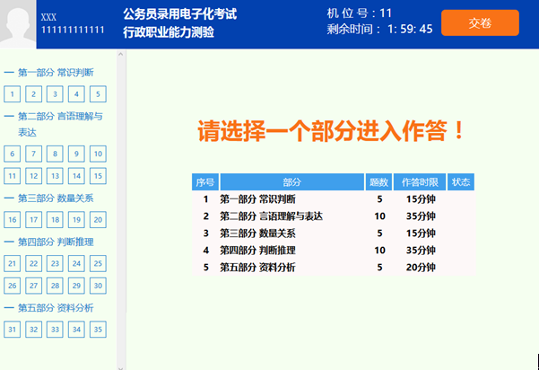

一、系统登录
（一）确认机位号
考生进入考场落座前，请确认机位号是否正确——机位号与准考证号后两位必须相同。
（二） 登录
在监考老师发布登录命令后，程序将自动进入登录界面。请考生根据提示输入准考证号和证件号码，点“登录”按钮进入登录确认界面。当机位号与准考证号后两位不相同时，将无法登录。
（三） 确认登录
展示考生信息以供确认，考生确认后进入等待开考界面。
二、等待开考
等待开考界面是考试前的一个提示界面，请考生利用考前等待时间认真阅读考试重要提示。点“考生须知”进入考生须知具体说明，点“考场规则”进入考场规则具体说明，点“操作指南”进入操作步骤具体说明。
点“我已阅读”按钮，系统开始开考倒计时；考试时间到达后，系统将自动进入考生作答界面。
三、作答界面
作答界面上方为标题栏，左下方为答题卡，右下方为试题区。
注：此图仅为示意，其中的内容和正考的实际内容，存在差异！
（一）标题栏
标题栏从左到右，依次显示考生基本信息、本场考试科目名称、机位号、考试剩余时间、”交卷“按钮。
（二）试题卡
试题分多个部分，题号按顺序编号。题号的背景色含义是：白底表示未作答，蓝底表示已作答，橙底表示当前正在作答。
（三）试题区域
1、选择某一部分作答
考生进入作答界面后，在试题区选择某一部分双击，或者单击左侧试题卡某一部分下的题号，即进入该部分作答界面。
2、试题作答
答题时，考生直接用鼠标点击备选项中认为正确的选项前面的按钮即可。如需要修改答案，用鼠标点击其他备选项前面的按钮，原先选择的选项将被自动替换。
3、切换作答部分
作答过程中如果需要切换到其他部分的题目，直接用鼠标点击该部分下的题号即可。
4、特别提醒
(1) 每部分都限时作答，系统在答题区域右上角显示该部分的作答剩余时间，作答剩余时间为零时，考生不能继续作答该部分的试题。请考生合理安排作答时间和作答次序。
(2)考生作答过程中一旦切换到其他部分进行作答，不可回退至之前已经作答的部分进行作答，请谨慎选择是否进行切换。
(3)考生提前结束某部分作答，该部分剩余的答题时间不累积到其他部分。
(4)每部分考试时间剩余五分钟时系统自动弹窗提醒。
（四）切换试题
系统为考生提供了多种切换试题的方式。
1、点击答题卡中的题号，系统展现当前题号的试题；
2、点”上一题“、”下一题“按钮，或使用F4/F5快捷键换题；
3、设置为自动切换模式，在答题完成后自动跳转到下一题。
自动切换设置如下图所示：
（五）试卷缩放
系统提供缩放试卷比例大小的功能，考生可以根据需求选择缩放比例。试卷缩放设置方式和自动切换设置类似。
（六）标记
系统提供标记功能供考生对试题进行标记，在选项卡上，被标记的试题右上角有个三角形的标识。考生若合理使用此功能，可以在大量的试题中快速定位到需要重点检查的试题。
（七）离线
当答题区域左下角出现如下提示：
则请考生立即联系监考人员处理。
四、交卷
（一）自动交卷
考生用完全部考试时间，系统会自动交卷。考生不得提前交卷。
（三）交卷结果
如果交卷成功，界面提示如下：
如果“交卷失败”，系统提示如下，可以进行重试交卷或者联系监考老师进行单机收卷处理。
五、异常处理
如果考生在考试过程中出现无法登录、无法进入作答、程序无反应、程序意外退出、连接中断、电脑死机、屏幕无法正确显示、键盘鼠标无法操作、交卷失败等可能会影响作答的状况时，请立即联系监考人员处理。监考人员将会根据不同的情况采取最合适的处理措施。